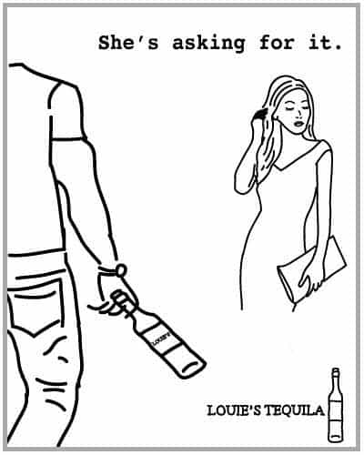

LG is a web designer living in New York City. He is co-editor of NAPALM, a blog of news and commentary.


Felicia Sullivan is a blogger, memoirist, and social media marketer. Though Felicia lives in New York, like me, and probably runs in the same techie-journo-bobo circles I do, I had never heard of her until one Wednesday last December, when she called me an ignorant, inbred troll.
That Wednesday was, on the surface, an unlikely day for Felicia to make my acquaintance. According to her Twitter account, she was on vacation in Australia. She seemed to be enjoying herself. At one point, she shared a set of pictures taken in Melbourne:
ICYMI: I snapped a ton of photos of Melbourne, a city rich w/ great coffee, kind folks, graffiti art + amazing food: http://t.co/HAXXzqONps
— Felicia C. Sullivan (@felsull) December 11, 2013
Later, she tweeted her plans to finance the purchase of a pony by selling internal organs of unspecified provenance:
@that_lucie_girl @coreykindberg Need to get to work selling these organs to pay for my pony.
— Felicia C. Sullivan (@felsull) December 11, 2013
At 10:25 PM EST, Felicia made a lighthearted crack about hypothermia:
It suddenly occurs to me that I didn’t leave New York with a winter jacket. I will probably die next week when I land at JFK.
— Felicia C. Sullivan (@felsull) December 12, 2013
All was well; just another fab day in the life of a blogger-memoirist-marketing professional—until Trouble reared its 140-character head.
After joking about death by exposure, Felicia noticed some Twitter friends venting about a “sexist†article published recently on the internet, of all places. Though she identified herself as a feminist—in her Twitter bio, no less—Felicia had yet to view this particular instance of online sexism. Her curiosity was piqued.
Humdrum though it may seem, this was a pivotal moment for Felicia. She was in a foreign country, surrounded by people and places she might never see again. The sun was shining, the air was warm. Internet sexists weren’t going anywhere; Felicia, however, was going back to New York in a few short days.
Felicia didn’t need to look at the sexist article. Outside the narrow screens of her Apple devices, a wide world full of real people and real experiences beckoned. All she had to do was turn the power switch to “off.”
Oh, but it’s hard to say no:
@Glambr @Medium Which piece? Can you send me a link. You know how I feel about sexism, or any -ism for that matter.
— Felicia C. Sullivan (@felsull) December 12, 2013
With that tweet, Felicia departed on her journey across a sea of hurtful words. Of course, we already know how that story ends; you just had to wait for it…
…wait for it…
…wait f—
WHAT IN THE FUCK IS THIS SEXIST NOISE? LIKE, IN THE FUCK. https://t.co/aq4m0ZDm1n
— Felicia C. Sullivan (@felsull) December 12, 2013
The sexist article had so incensed Felicia that she couldn’t help but send the tweet above: ALL CAPS, two “fuck”s, one allegation of sexism, and a hyperlink so that you can experience it too!
Think any of Felicia’s four thousand nine hundred thirty six Twitter followers might’ve clicked that link?
Attention whores: take note.
“Would Bang†by Breadcrumb; originally published in “xoBang”
I’ve heard the hardest part of a creative venture is making anyone else care. But writing “xoBang: The Typists of xoJane, Ranked by Bangability”—the article that upset Felicia so—couldn’t have been easier, and it sure made a lot of people care.
Frankly, when my friend “Breadcrumb†and I sat down to write the piece, we didn’t have a plan, nor even a concept, and not much concern what the final product looked like. All we cared was that it would piss a lot of people off.
Now, anyone who’s lived a day in his life knows the easiest people to piss off are women, and the surest way to piss them off is calling them “ugly.†The only insult that approaches ugly is “slut,†and that one has lately become a badge of honor.
As for our targets, we needed chicks with enough cachet to raise an e-lynch mob…but not so much cachet that they had better things to do than gnash and wail about us. So, girl bloggers.
Among girl blogs, xoJane’s Selfie-In-Every-Post policy makes it uniquely convenient to judge the looks of the blog’s writers. xoJane also has the virtue of being “surpassingly stupid,†as we noted in xoBang, which lessened any pangs of conscience Breadcrumb and I experienced while criticizing the women responsible for it.
With targets acquired, it was only a matter of copy-pasting the photos of some recent xoJane contributors and writing down what we thought of their looks. As we went, we lumped the girls into three broad groups—â€Would Bang,†“Could Bang,†and “Could Not Bang”—and arranged them within those groups in rough order of attractiveness. In our haste, some uggoes surely got classed among the hot chicks, and vice versa—making our ranking strictly accurate wasn’t the point.
Sitting in Breadcrumb’s living room, my fingers flew across the keyboard as he and I offered praise and shame for our subjects. More than once, we hearkened back to the vernacular of our high school hallways for just the right insult: ug-mug, f.u.p.a, fattitude. To expedite the writing process, we codified a few standard criticisms that applied to many xoJane contributors: slovenly attire; obsolescence (i.e., old age); willful disfigurement of self (i.e., pixie cuts, tattoos, fatness).
At the time, Breadcrumb was working on a series of drawings of obese women; he tossed a few of those together to create the art that accompanied the xoBang. Meanwhile, his girl fixed us a lasagna (scrumptious). Breadcrumb finished the drawings. We added them to the piece and hit publish. Not two hours after we began, our work was done.
For some initial traction, we tweeted the link to a few bloggers. Heartiste, arguably the most influential “Manosphere†blogger, retweeted it without comment.
Within an hour of publication, “xoBang: The Typists of xoJane, Ranked by Bangability,†written by “Cornbread†(my pen name) and illustrated by “Breadcrumb,†had 40 views. Not bad.
I thanked Breadcrumb and his girl for their hospitality and walked back to my apartment. It was the evening of Tuesday, December 10.
Throughout the day Wednesday, I watched the stats on our article creep up: 100 views, 200, then 400. Around 7 PM, we hit 800.
I texted Breadcrumb: “We’re close.”
“Any minute,†he wrote back.
If 800 views in 24 hours doesn’t sound like much, keep in mind that the author named “Cornbread†and the illustrator named “Breadcrumb†never existed before xoBang’s publication. We invented those identities for this story. Before the article went live, no one ever heard of them. They had no platform from which to publicize their work. They had a strange little article calling a bunch of New York blogger chicks ugly, and literally nothing else to their names.
So what Cornbread and Breadcrumb needed was somebody to handle publicity for them. Heartiste’s re-tweet helped. But to send their page views suborbital, they needed someone even bigger.
With the view counter holding steady around 800, I left for a dinner date. When we returned to my apartment, I checked Cornbread’s email, which was synced to my own: three Twitter notifications. I read them one by one:
@hicornbread that was pretty much the most revolting thing I’ve ever read. And I used to work for a vanity publisher.
— Aly Walansky (@alywalansky) December 12, 2013
@alywalansky @jessgoon Also, this guy’s such a grade-A moron, he included Kristin Booker on the list twice. #proofread
— Amber Katz (@Glambr) December 12, 2013
Ironic that @hicornbread calls @xojanedotcom “surpassingly stupid,†when their “bang-ability†piece is clearly an excavation through trash.
— Felicia C. Sullivan (@felsull) December 12, 2013
I texted Breadcrumb: “Look at the Twitter feed.”
“I guess they noticed,†he wrote back.
“You cool if we take the piece down?”
It took Breadcrumb a while to respond, and I knew what he was thinking. Although we had agreed to pull xoBang before it could really blow up, it would be interesting to see how far our little hit piece might go, if we didn’t un-publish. How many impassioned wowjustwow’s and what in the actual fuck’s could we inspire? I was certainly wondering that.
But, after a couple minutes, Breadcrumb agreed: “We got our proof of concept. Take it down.”
I went back to my computer, deleted the original text of “xoBang,†and pasted in our prepared retraction. Then I republished it, and went to bed.
(Those interested in reading “xoBang†can find the full text, minus identifying details of most typists, at NAPALM. The version posted on Medium will remain retracted.)
While I slept, Twitter seethed. Though the article was retracted, there remained much angry typing to be done.
@alywalansky @jessgoon Listen, if he were remotely bangable, he’d never have the time nor the inclination to compile such a fakakta list.
— Amber Katz (@Glambr) December 12, 2013
@Glambr @jessgoon he probably lives in his parents’ basement and jerks off to anime while eating cold dominos pizza.
— Aly Walansky (@alywalansky) December 12, 2013
@alywalansky fuck that noise. I fucking hate this asshole.
— marina (@makeuplovesme) December 12, 2013
@alywalansky @Glambr @jessgoon link please?
— Corey Kindberg (@coreykindberg) December 12, 2013
@alywalansky @coreykindberg @jessgoon @makeuplovesme Dude, fuck that fat mess. He’s definitely sweating while drinking a soda. Eat it.
— Amber Katz (@Glambr) December 12, 2013
World’s most compelling argument against contributing to @xojanedotcom /via @medium (for shame, @ev) https://t.co/ZJ5aVlpT2U
— Dina Fierro (@eye4style) December 12, 2013
So, you guys remember when I said http://t.co/qNu5tim9Hb was my new favorite site? DISREGARD, it’s awful. @Medium y’all are gross.
— Edotwoods (@edotwoods) December 12, 2013
This is why I’m perfectly happy dying alone, unless of course @Alia_Rajput realizes my marriage proposals are real: http://t.co/r6LOOzfKGr.
— Sarah Conley (@styleit) December 12, 2013
@LesleyFerree If this piece, which hurt many women I know, is not removed, I will never write a single piece for @Medium EVER.
— Felicia C. Sullivan (@felsull) December 12, 2013
Hey @ev Have you seen what’s on @medium ? Im sure you would not approve. Please consider removing? https://t.co/k7QVypFqdQ cc @alywalansky
— Melanie Notkin (@SavvyAuntie) December 12, 2013
@eye4style Misogynistic loser guys rating women based on their “bangabilty”. Super classy. Hope those guys parents are proud.
— Jules (@jules792000) December 12, 2013
@Medium the published piece about xoJane writers is incredibly offensive & not OK in the slightest.Thought you were a different kind of site
— afrobella (@afrobella) December 12, 2013
@alywalansky BABY. Fuck that troll and his/her ignorant, inbred noise. You are a beautiful, strong, wonderful writer.
— Felicia C. Sullivan (@felsull) December 12, 2013
Apologies for the expletive, but fuck every single person who makes someone else feel small because of their weight, looks, race, hair, etc.
— Felicia C. Sullivan (@felsull) December 12, 2013
@Glambr Absolutely appalling. I am deleting my account on @Medium if this isn’t taken down.
— Mischaela (@MischaelaElkins) December 12, 2013
I have never read anything so repulsive
— Yesha (@YeshaCallahan) December 12, 2013
@YeshaCallahan Damn! It was retracted. Do you have the archived link?
— Karyn Polewaczyk (@KarynPolewaczyk) December 12, 2013
@tout_moi @felsull now they have retracted it?! Yeah, cause that’s how the internet works.
— Jane Flanagan (@seenandsaid) December 12, 2013
Lest we forget, ladies! #TYPIST.
— Felicia C. Sullivan (@felsull) December 12, 2013
Yo @Medium & @readnapalm-retraction aside-ur article about banging @xojanedotcom typists is backwards sexist BS that limits women & bloggers
— Sassy Dove (@sassydoveblog) December 12, 2013
Disgusted by the misogynistic filth @Medium allowed to pollute their site http://t.co/1QPQ72JXUS … Retraction: https://t.co/Z7I3l6XQiY
— Lindsey Tramuta (@LostNCheeseland) December 12, 2013
And elsewhere online:
There were a few approving comments for the pseudonymous “Cornbread”:
I seriously love cornbread lol. My #soulmate 🙂 http://t.co/z8YkUMu0pJ
— ღ Sarah Robinson .♡. (@StuckMami) December 12, 2013
Cornbread so good have me singing gospel
— Adrian Dilworth (@Dillpickle_21) December 12, 2013
…but they were outliers. Their encouragement couldn’t change the fact that the web had weighed our work, and found me and Breadcrumb wanting—not only journalistically, but also physically, emotionally, intellectually, professionally, and by virtue of our undersized dicks.
The next morning, after turning off my phone’s alarm, I lay in bed for a while scrolling through the full Twitter fiasco. I read every criticism and insult I could find. Even I was surprised by how much attention we stirred up.
Then I set my phone aside and spent a moment taking stock of my situation. Astoundingly, I found I was little changed from the night before.
Despite the Twitter mob’s insistence to the contrary, I wasn’t fat, and I wasn’t sweating; if anything, my room has a chill on winter mornings. I hadn’t eaten Cheetos or Domino’s Pizza in years. I couldn’t name a single anime cartoon. Had I realized you can jerk off to them, maybe I’d know a few.
Contra Aly Walansky, I wasn’t in my parents’ basement; I was in a sixth-floor apartment on the Upper West Side. Anna, a 23-year-old ballet dancer I was then seeing, was asleep beside me; otherwise the apartment was empty, as I’d expect, given that mine is the only name on the lease. I still wasn’t inbred. My penis remained large enough to brag about, supposing I felt like it, which I do: Sumbitch girthy.
It was as though the criticisms of strangers on the internet—no matter how deeply personal they got—still had zero bearing on my reality or lived experiences.
Why then did these women give a shit what I wrote about them? And why did they bother with this ritualistic Twitter-rage about me and my article?
For very compelling reasons, I think. But before I get to that, let me explain why I give a shit about this.
“Could Bang†by Breadcrumb; originally published in “xoBang”
When I’m not busy ranking girls by their bangability, I work (among other places) at a Manhattan agency that creates print and online ads. Though we’re small, odds are good you’ve seen our work. Two summers ago, a husband and wife who own a niche luxury brand asked us to design a campaign for their company. They had an excellent product with an interesting backstory, and were open to any angle we chose.
It was a dream account, but for one catch: Their advertising budget was almost nil. After paying us, they would have no money left to actually purchase ad space. Rather than turning down work, we proposed they try a “guerrilla†campaign: We’d design the ads and distribute them on the cheap, as fliers and online, in hopes that they would go viral.
We warned the couple that guerrilla marketing is high risk and high reward. There’s no guarantee your ads go viral, and if they don’t, you don’t get your money back. But if the ads do catch on, you can get more attention, more quickly than traditional advertising could ever deliver, and at a fraction of the cost.
Also, we told them that guerrilla marketing practically requires controversy. There are other ways to get lots of attention, but there’s nothing as reliable as being, as our Creative Director put it, “horrifically inflammatory.”
I’ll never forget the woman’s response:
“Then horrify us,†she said, without missing a beat.
Because of our NDA, I can’t share the company’s name or the exact ads we created for them. Instead, I’ve mocked up several fake ads that approximate the tone and spirit of the originals.
The real client wasn’t a liquor company, and the jokes shown below aren’t the same ones we used in their ads, though they are similar. But for our purposes here, these are essentially the same as the fliers we designed:

We printed $200 worth of these on plain LaserJet paper and hired some guys to hand them out around two large cities. We probably should’ve given them hazard pay—two got slapped by women, and one of them almost got punched by a dude—but we didn’t.
There was a lag of about 24 hours between the first flier hitting the streets, and the first outraged blog post hitting the web. Over the course of a week, dozens more posts appeared, and the ads were shared all over social media.
Early in the controversy, a blogger noticed that all of the posters were viewable on the company’s website. In her screed about the prevalence of misogyny and male-on-female violence in advertising, she included a link to the site. Other bloggers followed suit.
A petition calling for a boycott of the company circulated for a couple days. Outraged missives were sent and recieved. More than one tearful vlog was recorded in protest. Our unpaid intern catalogued all of this for the client’s monthly report.
By our rough estimates, the number of people who read blog posts about the company and its ads leveled off somewhere in the 1–1.5 million range. Before the controversy, the company’s website got 200 hits on a great day. During the controversy, it received 200,000 in two weeks.
Publicity like that can’t be purchased. It can only be given—and only by people like Felicia Sullivan.
That experience got me thinking about viral marketing, and specifically what it does for my company, my clients, the media, and the audience all three of us share. Those guerrilla ads earned my company, and by transference me, a nice payday. They were also fun to create: We expensed an eighth and a stack of pizzas to petty cash, got stoned to high heavens, then banged out the posters in a single night. No complaints there.
My client got enormous exposure. For every potential customer they alienated, there were ten more who became aware of them for the first time. The outraged bloggers, for their part, got pageviews and uniques and followers, which their bosses cashed out in the form of ad sales and impressions, and then some small portion of the ad revenue trickled back down to the typists—excuse me, writers.
The short end of the stick went to you, the audience. All you got was offended, annoyed, and sucked into another virtual pissing contest about sexism in the media.
(You also, perhaps, acquired brand awareness of my client—a company that wants your money in return for overpriced shit you don’t need.)
To recap: I won. My client won. The bloggers won. Everyone else got fucked. And though I never had any illusion of advertising being God’s work, I wasn’t comfortable with that. It seemed that viral advertising was the only advertising we designed to be a specifically negative experience for the audience. In our other work, we aimed for advertisements that were informative, if not outright entertaining. We wanted to engage and inspire. We wanted to be compelling, authentic, and honest.
Viral advertising takes the virtues of that approach and negates them. It asks “creative industry†workers like me to imagine something awful, and then do it.
I decided I didn’t want to do that anymore.
“Could Not Bang†by Breadcrumb; originally published in “xoBang”
But enough about me. Let’s discuss Felicia Sullivan & co.
The Twitter backlash to “xoBang†was nearly unanimous in its insistence that the piece be removed from Medium, the publishing platform we used. (In case you’ve forgotten, see here, here, and here for reminders.)
You might assume the ladies’ goal in calling for the removal of “xoBang†was to limit the exposure it received. Maybe if they caused an outcry, Medium would feel the heat, the piece would get pulled, and total pageviews would be drastically reduced.
Kinda makes sense, right?
Let me show you what actually happened.
Like I said above, total views of “xoBang†were hovering around 800 before Felicia Sullivan and her friends got hold of it. As soon as I noticed the ladies passing the link around Twitter, I checked the numbers again:
xoBang stats, ~20 minutes after going viral
Already it had racked up an additional 500 views. Around that time, Medium’s stat counter froze—I don’t know why—and didn’t refresh until about 4 PM the next day.
At that point, the graph looked like this:
xoBang stats, 4 p.m. on December 12
Visitors had kept pouring in, even after the retraction. Before the week was out, total views topped 6,000.
We can’t break down exactly who is responsible for each of those 6,000 views, but based on the timing of the traffic, I think it’s fair to attribute about 1,000 of the views to Heartiste and others in the Manosphere, and lay the remaining 5,000 at the feet of the Twitter chicks linked earlier.
Which is to say, the angry ladies extended the reach of “xoBang†500 percent. To put a finer point on it: Felicia Sullivan and Friends, who acted so anxious to get xoBang censored, and were ostensibly opposed to anybody seeing it, were themselves the primary vector through which the piece was spread.
But for the efforts of highly-visible women like Amber Katz (25,900 Twitter followers), Aly Walansky (25,500), Dina Fierro (23,700), Melanie Notkin (22,300), Grell Yursik (58,200), and of course Felicia Sullivan (4,900), xoBang would have continued in its obscurity. Nobody else would’ve known it was written. Nobody would’ve realized they should feel offended by it.
Had Felicia Sullivan kept her anger to herself, rather than sharing it with her 4,936 Twitter followers, it would have been as though xoBang were never published—which, again, is what she claimed to want.
So why the hell did Felicia share it?
One last digression before we get to that.
I have a term for articles and videos like xoBang and like the liquor posters above: malignant viral content. The best way to explain what malignant viral content is, is by explaining what it isn’t.
A video of a kitten snuggling with an adorable walrus that gets 10 million views overnight is viral, but not malignant. Same goes for stupid songs, Buzzfeed’s compilations of 76 incredible GIFs, meme-y Tumblrs and Twitters, brief works of gourd humor, etc.
These things have the virtue of being harmlessly entertaining, and that alone justifies sharing them. There’s value in content that makes us laugh and feel good, even if there’s not deep meaning behind it. Of course, plenty of content goes viral without being entertaining. Some of it’s quite upsetting—but still not malignant.
A prime example is the footage of the 2007 Baghdad airstrikes, in which a U.S. Army Apache helicopter attacks and kills unarmed Iraqis and two Reuters reporters. One copy of the video on YouTube has almost 15 million views. To watch it is stomach-churning, but your understanding of America’s involvement in Iraq is incomplete until you’ve seen it and read the surrounding story.
Similarly, Gawker’s 2010 story about Christine O’Donnell’s drunken hookup with an almost-stranger was a revealing look at the character of a woman on the verge of becoming a U.S. senator. In 2011, the child sex scandal involving Penn State defensive coordinator Jerry Sandusky was sickening to read about. But to avert your eyes was to miss the truth about the corrupting influence of athletics in higher education.
Those stories angered those who read them—same as “xoBang†did—but the anger was caused by meaningful information that exposed real problems among America’s leadership and governing institutions. The outrage was worth it. Those stories weren’t malignant.
Compare that to xoBang.
What does xoBang tell us about society? About ourselves? What trends does it reveal? What flaws does it expose, or even hint at?
Before anyone thinks too hard about those questions, let me just tell you: xoBang tells us nothing. It reveals nothing. It is not indicative of anything except what two anonymous guys, acting by themselves, wrote in order to get a rise from a small group of Twitter entrepreneurs.
There is nothing about xoBang that merits protest, or consciousness raising, because it is a wholly anomalous and aberrational offense. There is no trend of men making lists of the ugliest female journalists. There’s no reason to think that will catch on in wider society.
Put simply, there’s nothing about xoBang to oppose, or to combat, because virtually everyone who reads it will recognize that it tramples all over society’s well-established standards for how we treat other people. So once you finish reading xoBang, there’s nothing about it that merits further attention—not from you, and certainly not from everybody who happens to see your enraged tweets.
The utter insignificance of xoBang was by design, and it’s an important distinction between our piece and the things that Roosh and Tuthmosis write, or one of Ryan Holiday‘s publicity stunts. Those guys have platforms and connections to broader movements or organizations, and that gives journalists and activists a pretense for bitching when Roosh observes that some dog-looking feminist is ugly, or Tuth releases an exhaustive slut diagnostic. Amanda Hess or Katie J.M. Baker or the staff of the Southern Poverty Law Center can take something Roosh or Tuth writes and parlay it into a pageview bonanza, all while semi-plausibly claiming “social justice†as their motivation.
But Breadcrumb and I had a hypothesis that the “social justice†component of these Twitter tantrums in response to the SWPL outrage du jour is bullshit, basically; a convenient cover for less noble aims. xoBang, which is both irresistible to the social justice warriors and completely unworthy of their attention, was created to test that hypothesis.
The piece is so obviously out-of-bounds that no reasonable person would argue it requires a response in the name “social justice.†That fact dampened the social justice crowd’s enthusiasm for sharing it exactly as much as we expected: not at all. The girl bloggers and their assorted hangers-on were drawn to “xoBang†like lemmings to a precipice, and upon reading it, promptly took the bait and lost their shit.
And why? Well, for the most banal reason imaginable: Because they’re paid to do so.

Felicia Sullivan (shown in selfie above) tweeted about xoBang—a wholly inconsequential internet obscurity—17 times (1, 2, 3, 4, 5, 6, 7, 8, 9, 10, 11, 12, 13, 14, 15, 16, 17) because Felicia Sullivan is a rage profiteer.
The same goes for Amber Katz, Aly Walynsky, Grell “Afrobella†Yursik, and Melanie Notkin: rage profiteers, all. There are rage profiteers operating on every public platform, and catering to almost any special interest or demographic group you can imagine. You are probably no more familiar with Felicia Sullivan than I was, but it’s virtually guaranteed that you follow other rage profiteers (as I do), and allow them to command an outsized share of your attention.
That’s what rage profiteers do: They traffic in content that is so irresistibly inflammatory that it hijacks our attention and forces us into the rage profiteer’s audience. Rage profiteering has surely existed, in one form or another, from time immemorial. But the diffuse lens of the internet and digital media created an extraordinary range of new niches for rage profiteering, and has thus caused a proliferation of rage profiteers such as society has never before seen.
Recall that Felicia’s own bio describes her as a digital marketer and author: two professions in which visibility and success are synonymous. Felicia builds her business and lines her pockets by gaining your attention, and I know better than anyone that a great way to capture someone’s attention is to piss ‘em off.
Piss ‘em off—as Felicia did with her tweets about “xoBang”—and they’ll retweet you and respond to you. Your Twitter handle will appear in other people’s Twitter feeds, where their followers will see it. You will gain new followers and, above all, increased prominence and recognition. The attention you receive will be positive and negative—but the negative hardly matters, as long as you keep pulling the people’s strings. That is the bargain by which the rage profiteer lives.
I’m not saying that Felicia Sullivan’s barking about xoBang made her micro-famous. It didn’t. Rage profiteering, and content marketing in general, is a gradual, accretive process. Share enough malignant viral content, and slowly but surely, your Twitter following will grow.
I believe Felicia Sullivan when she calls herself a feminist. I don’t doubt she’s genuinely interested in what our society dubs “social justice.”
As such, I suspect that if given the choice, she’d rather tweet about real injustices that might benefit from the antiseptic powers of press coverage and public attention. Who wouldn’t prefer their life be meaningful and outward oriented, rather than hollow and self-serving?
But as a practicing rage profiteer, Felicia Sullivan will not hold her fire just because her target is something as inconsequential as “xoBang.†She has 4,936 Twitter followers who represent the lifeblood of her personal brand, and they start forgetting about her the moment she stops providing them interesting and infuriating shit to gawk at.
Your attention (as distinct from your education, enrichment, or well-being) is Felicia’s stock-in-trade. That is why her online persona has been meticulously calibrated to hijack your time, thoughts, and emotional state. Her goal is to make you look her way, then parlay you into new Twitter followers, bigger social marketing clients, better Amazon sales numbers, and—above all—more dollar bills in her purse.
What I’m submitting is that rage profiteers like Felicia Sullivan, and like me in times past, do not freely provide you with tweets and links to splenetic columns of wrath and bile. You re-pay the rage profiteers dearly, with your time and frustration. Your anger is their livelihood. When they alert you to the latest bit of “can’t miss†hate reading, what they’re telling you is, they cannot afford for you to miss it.
Your relationship with the rage profiteers is transactional, and you are getting hosed in the deal.
So when I ask, “Who benefited from the tweet below?”
WHAT IN THE FUCK IS THIS SEXIST NOISE? LIKE, IN THE FUCK. https://t.co/aq4m0ZDm1n
— Felicia C. Sullivan (@felsull) December 12, 2013
…the answer should be obvious: Felicia Sullivan, her rage profiteering colleagues, and absolutely nobody else.
Now one last question— who was the troll in this story?
Illustrations by Breadcrumb.
“xoBang†was originally published on Medium.com, a publishing platform similar to Tumblr or WordPress.com. Medium was uninvolved in the creation of “xoBang,†and as with most pieces that appear on Medium.com, did not review “xoBang†prior to publication.
Read Next: Pax Dickinson And The Culture Of Tolerance
{kind=link}
{kind=link}